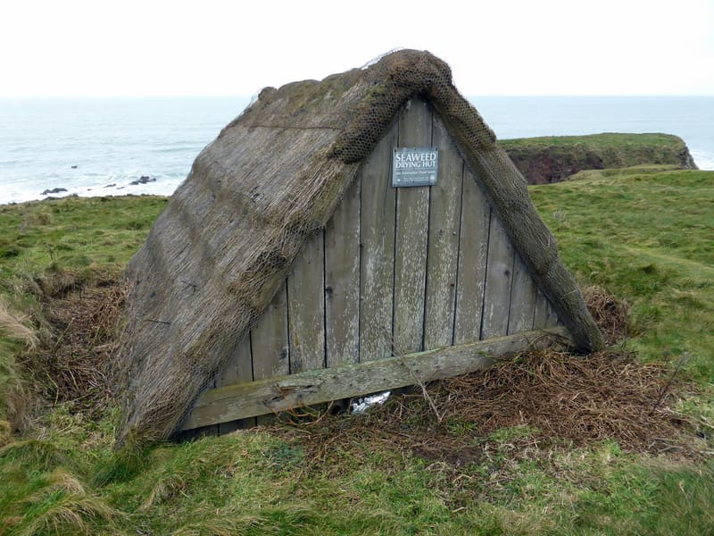

Red · Rhodophyta
Chondrus crispusIrish sea moss
The base. Picked by hand off cold Atlantic rocks at low tide, then dried rather than made into a gel. This is the plant the old herbals call carrageen.

The Seaking scene. An illustration, not a photograph of the tub.
Sea moss · the capsule
£39.9950 capsules · 25 days · £1.60 a day
Not sure it is for you? Ring the shop on 07946 806533, Tuesday to Sunday, and ask. Reiss or whoever is on the counter can talk you through it.
The same four algae that go into the Northern Soul gel, dried and milled into a capsule, with one clove alongside them. Four algae from three families: a red, two browns and a green.
Chondrus crispus · Fucus vesiculosus (bladderwrack) · Laminariales (kelp) · Chlorella · Syzygium aromaticum (clove). Five names, and there is no sixth on the list.
Two capsules each morning, with at least 500 ml of water.
Two a day is the whole dose, not a starting point. If you miss a morning, take two the next morning and not four. Seaweed carries iodine and iodine has a daily ceiling, which is the reason the figure is printed on the tub at all.
Keep the tub closed and dry. Capsules do not want the fridge, which is the practical difference between these and the gel. There is no storage temperature printed on the pack, so we do not print one here either.
Anyone with an overactive thyroid should leave it alone. If you take thyroid medication, ask your GP or pharmacist before you start. It is not for children.
If you are pregnant or nursing, ask your midwife or GP first. The reference intake for iodine is not the same then: 150 µg a day for an adult, 220 µg in pregnancy and 290 µg when breastfeeding.
Sent out from 599 Smithdown Road, Liverpool, Tuesday to Sunday. Capsules go by ordinary post, not chilled. UK delivery is free over £50, or you can collect from the shop between 10 and 6, any day except Monday.
The routine

Two capsules, first thing. The label says each morning, so that is when we take them.

With at least 500 ml of water. That is on the pack as well, and it is a large glass rather than a sip.
Two a day, and no more. Two capsules are 150 µg of iodine. Doubling up after a missed morning takes you past the day's figure for no reason.

Lid on, somewhere dry. No fridge and no freezer. A tub of 50 is 25 mornings, then you are at the end of it.
What is on the inside
Grouped by colour, which is also how botanists group them. The fifth is a spice, and it is the one thing on this list that the gel's list does not carry.
Red · Rhodophyta
The base. Picked by hand off cold Atlantic rocks at low tide, then dried rather than made into a gel. This is the plant the old herbals call carrageen.

Brown · Ochrophyta
The brown seaweed with the air bladders. It grows on the same shores as Chondrus, a little higher up the beach.

Brown · Ochrophyta
The largest of the four, from deep-water forests like the one in the photograph. Dried and milled, like the rest of the tub.

Green · Chlorophyta
A single-celled green alga. It is cultivated rather than wild, and it is the only one of the four that grows in fresh water.

Spice · Myrtaceae
The dried flower bud of an evergreen tree, the same clove that sits in a spice rack and in Decolonise. It is declared on this list and not on the gel's.
Sea moss · 02
Everything we can tell you about what is in the tub, including the one figure here that is measured rather than estimated.
| Makeup | The Northern Soul formula dried and milled into a capsule: four algae from three families, grouped by pigment, plus clove. Red (Rhodophyta), brown (Ochrophyta) and green (Chlorophyta). |
|---|---|
| Base | Chondrus crispus, Irish sea moss, cold Atlantic. Wildcrafted, not pool grown. |
| Declared list | Chondrus crispus · Syzygium aromaticum (clove) · Fucus vesiculosus (bladderwrack) · Laminariales (kelp) · Chlorella. The gel's list is the same four algae without the clove. |
| Dose | 800 mg per vegan capsule |
| Count | 50 capsules · 25 day supply |
| Price | £39.99. Two capsules a day works out at about £1.60 a day. |
| Serving | Two capsules each morning, with at least 500 ml of water. Do not take more than two in a day. |
| Iodine | 75 µg per capsule. 150 µg in the two capsules that make a day's serving. The reference intake for an adult is 150 µg a day, so two capsules are the whole of it. |
| Weight | Listed at 100 g for the pack as it ships. The contents are 50 × 800 mg, which is 40 g. |
| Capsule | Vegan capsule. The shell material is not named on the listing, so we do not name one here. |
| Storage | Closed, dry, at room temperature. No refrigeration. The pack prints no storage instruction of its own. |
| Excipients | None declared. The list is five ingredients long and there is no sixth on it. |
| Suitable for | Vegans. Adults. |
| Not for | Anyone with an overactive thyroid (hyperthyroidism). If you take thyroid medication, or you are pregnant or nursing, ask your GP, pharmacist or midwife before starting. |
Contains iodine from seaweed. Do not exceed two capsules a day. Speak to your GP or pharmacist before starting any supplement, particularly if you have a thyroid condition or take medication for one. Food supplements should not be used as a substitute for a varied and balanced diet and a healthy lifestyle. Keep out of reach of young children.
Seaking is the one product on this shelf with a measured mineral figure, so it is the one where we can print a number instead of an adjective. A number is not a claim. It is 75 µg per capsule, and what that does once you have swallowed it is not something we are permitted to tell you.
From Reiss
A gel is the whole plant with water through it, and the amount of iodine in a spoonful moves with the harvest. I will not print a figure for the jar because I would be guessing at the second decimal place and you would be counting on it. Dried and milled and weighed into 800 mg capsules, the same seaweed sits still enough to measure, and that is why this tub says 75 µg and the jar says nothing.
People buy Seaking for two reasons. They travel, and a jar that needs a fridge is no use to them. Or they need to know exactly how much iodine they have had that day, usually because somebody at a surgery has asked them to. The second reason is the better one, and it is the only thing the capsule does that the gel does not.
Seventy five micrograms. I would rather give you one number I can stand behind.
Reiss Davies Ausar
599 Smithdown Road, Liverpool
Ours, next to what we usually see on tubs that people bring into the shop.
| On the label | Seaking | Typical listing |
|---|---|---|
| Every ingredient named in Latin | ✓ | Often "marine blend" |
| Milligrams per capsule stated | 800 mg | Per serving, if at all |
| A measured iodine figure | 75 µg | Rarely printed |
| Capsule count and days stated | 50 · 25 days | Count only |
| A daily ceiling on the pack | ✓ | "Take as needed" |
| Vegan capsule shell | ✓ | Often gelatin |
| Somebody to ask, at a counter | ✓ | A contact form |
The right-hand column is what we most often see on tubs customers bring in. It is not a claim about any particular brand, and some of them do tick every box.
Four sea moss products, three species or preparations. Reiss explains which is which.

The same four algae as a gel. One tablespoon each morning, 300 ml or 500 ml, kept in the fridge.
Choose a size
The plain gel. One alga, water and Omega DHA oil. Some customers use it as a face or hair mask.
Add to bag
Eucheuma cottonii, the warm-water species, from Tanzania. Lasts ten to twenty days.
Add to bag
Red sea moss with hibiscus, elderberry and baobab. 300 ml or 500 ml.
Choose a sizeFrom the journal
Seventy five micrograms per capsule, 150 in two, and nothing printed on the gel at all. Reiss on what that figure is measured against, why the jar has none, and the clove that is on one list and not the other.
Read the article